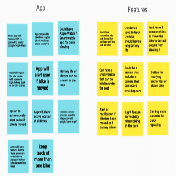
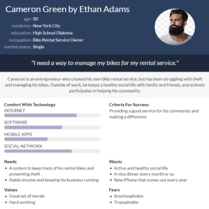
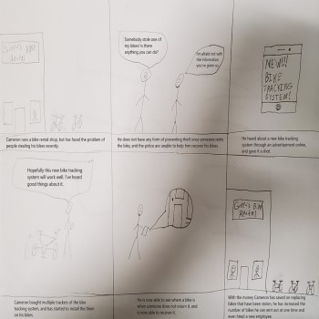
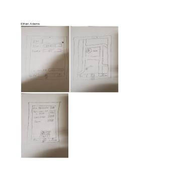
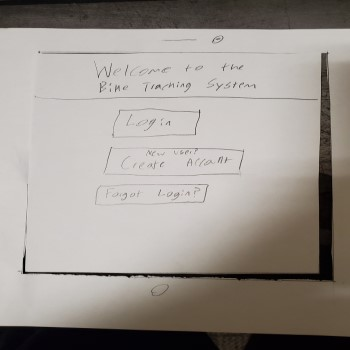
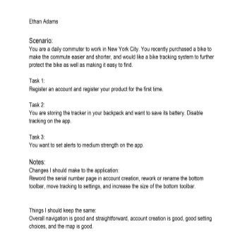
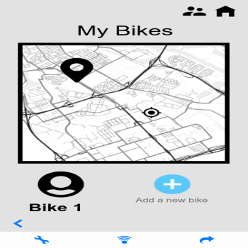
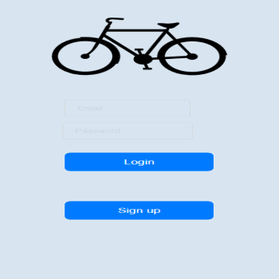

Problem Statement: Bike Tracking System

Our users struggle with maintaining the location of their locked bikes and often suffer from theft. Our solution should enable users to track the location of their bikes through a GPS system in order to always know where they left it and to find out where a thief may have taken it.
Affinity Diagram: Bike Tracking System
My group and I worked together to brainstorm many different solutions and ideas for our bike tracking system, such as application integration, device construction, and who the end user will be.
Persona: 4 Personas for Bike Tracking System
Multiple personas created by our team to represent the users of the Bike Tracking System.
Storyboard: Storboard based on Cameron Green
Multiple storyboard illustrations demonstrating the need for a bike tracking system, whether it be commercial or personal use.
Sketch: Bike Tracking System
Multiple sketches of potential app solutions for a bike tracking system.
Paper Prototype: Bike Tracking System
A short video about a paper prototype on what the app may look like and how it may function.
Usability Testing: Bike Tracking System
Testing script with a scenario and taks, with notes on changes that should be made to the paper prototype.
Low-Fi Prototype: Bike Tracking System
A low fidelity prototype to showcase a basic version of the bike tracking system.
Hi-Fi Prototype: Bike Tracking System
A high fidelity prototype to showcase the bike tracking system.